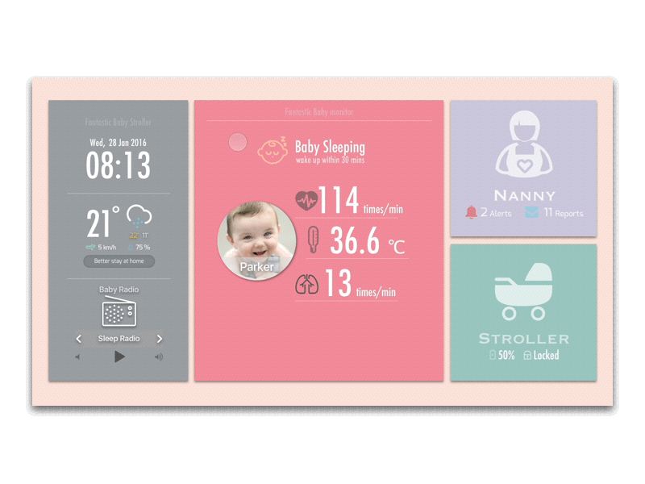
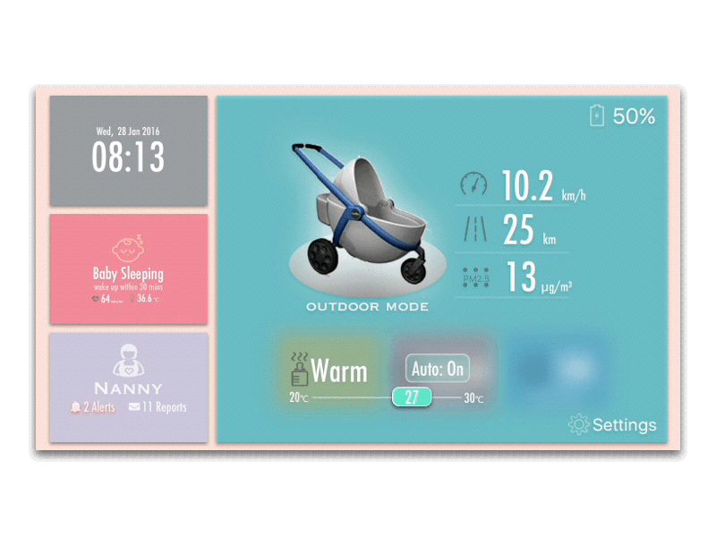

FANTASTIC BABY
Concept design & App design
- Project Type
- Course project
- Date
- Feb, 2016 - May, 2016
- Team
- Ming LIAN, Xiangming GE, Jiahe Liu
- My role
- UX Designer
- Methods
- Observation / Questionnaire / Interviews / Story mapping / Persona / Prototyping
- Deliverables
- High fidelity prototype / Demonstration video
Fantastic Baby is an embedded control panel for the control and monitor of conceptual intelligent baby stroller. It can be installed on the mobile phone or tablet. And the installed devices can be installed on the handle of baby stroller, which allows parents to monitor the status of baby and stroller while carting the stroller.
Motivation
When using the traditional stroller, parents will probably meet the following problems:
Baby be stolen
When taking baby out for shopping or playing, baby probably be stolen without notice.
Baby hard to sleep without rocking
Baby hardly sleep if parents leave them in the stroller. But they would happy and fall asleep rapidly if the stroller is rocking.
Parents need realtime monitor
When parents leave their baby, they would want to know that what their baby doing, what emotion the baby have.
Milk need to keep warming
Milk can not be stored in the vacuum cup, considering that would reduce the nutrition. But stored in the normal cup can not keep milk's temperature.
The traditional stroller could hardly solve these problem. Therefore, we proposed to design a intelligent baby stroller which could satisfy these problems.
User Research
Before designing, we use observation, questionnaire and user interviews to gather information from newborn infants parents, elderly and babysitter to verify the four main requirements above and to explore the missing points.
(Click the button below to see more)

{kind=link}
Design process
After analyse, we conducted a framework and an accordingly low-fi prototype on the paper. Based on the low-fi prototype, we used sketch to draw the interface, and used principle to generate interactive prototype.
Design highlight

Creative switch mode
Three panels correspondent to the three main functions. Each panel has their respective background color, which could reduce the
- Using color to represent different function part

Big & Colorful widget
For the convenience of elderly, and to create a childlike atmosphere, we use the switch mode as the animate shows. Three panels correspondent to the three main functions with a time panel, these four panels have their respective background color

Avoid mis-touching
Avoid mis-touching when changing the setting value.

Biggest hotspot
According to the Fitt's law and to optimize for the operation when moving, any area outside the widget is set as the hotspot of "back" function .
Usability Testing

After prototyping, we invited two groups of experts to test usability.

The selected findings from it
- Lack of operation guide.
- Fonts in main page are too small.
- Difficult to figure out the baby report.
- Treat the text as a button on main page.